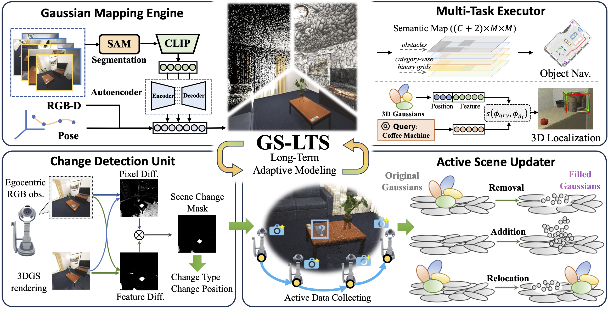

GS-LTS System

we propose GS-LTS, a 3DGS-based system designed for Long-Term Service robots in indoor environments. The GS-LTS framework integrates four key modules: (1) Gaussian Mapping Engine, which constructs a semantic-aware 3DGS representation, integrating geometry, visual appearance, and semantics; (2) Multi-Task Executor, which helps robots perform downstream tasks like object navigation using the informative 3DGS representation; (3) Change Detection Unit, a long-running module that detects scene changes at a specified frequency by comparing the robot's current RGB observations with historical 3DGS-rendered images, locating altered regions and analyzing change types and positions; and (4) Active Scene Updater, which is guided by a rule-based policy, directs the robot to collect multi-view images around detected areas, and applies pre-editing and fine-tuning to dynamically update the 3DGS representation based on the detect change type and new observations. Together, these components enable the robot to adapt to evolving surroundings while maintaining robust performance over extended periods.